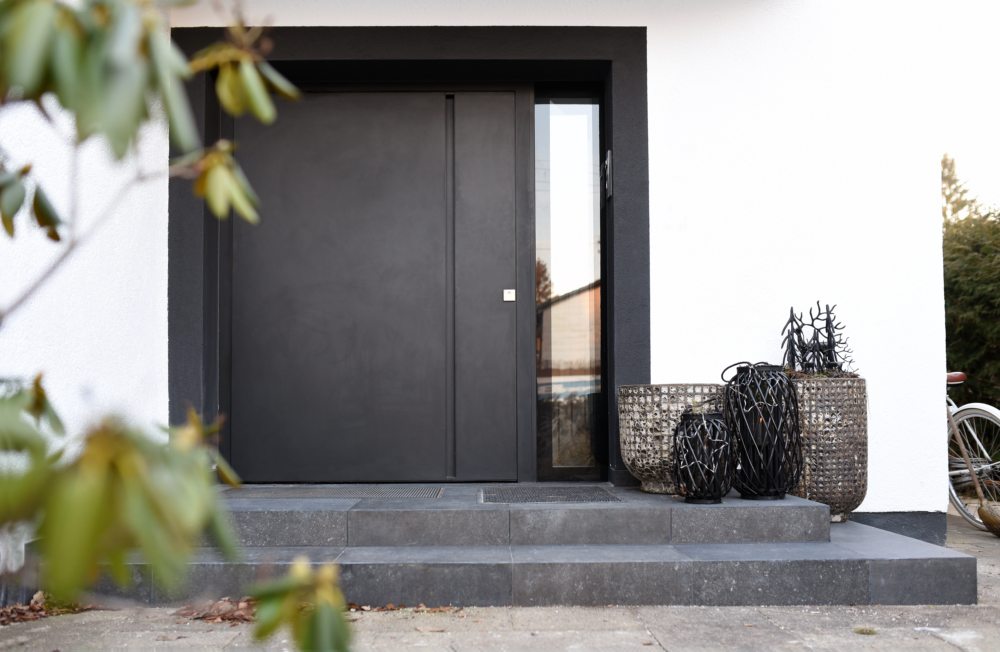
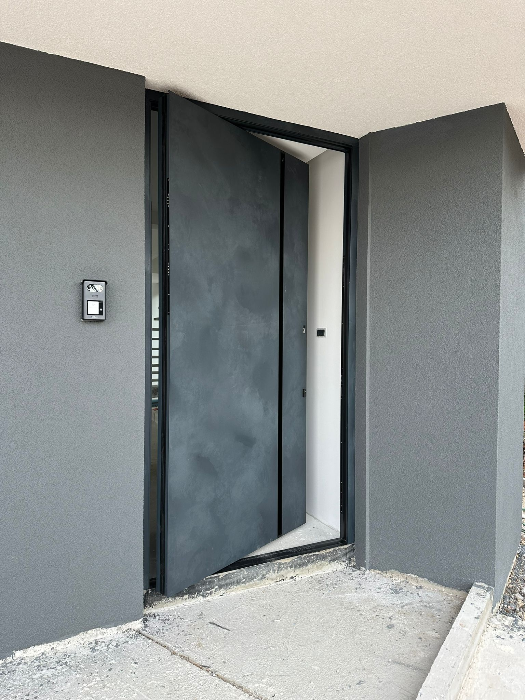
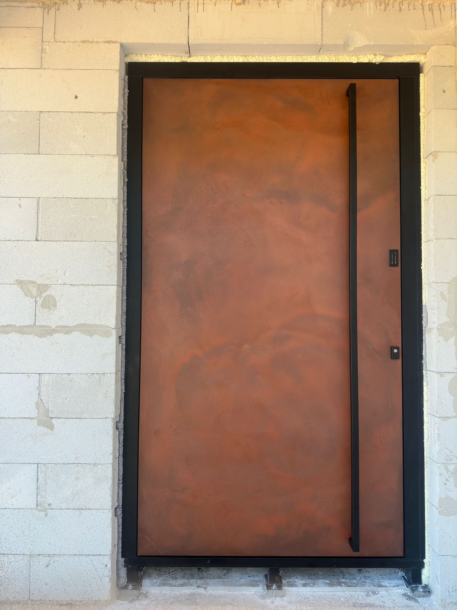

Aluminijska
Pivot Vrata.
Statoplast pivot vrata predstavljaju sam vrh moderne estetike i inženjeringa ulaznih sustava. Karakterizira ih rotacija oko vertikalne osi pomoću robusnih podnih i stropnih mehanizama koji omogućuju lagano i besprijekorno rukovanje masivnim krilima.
Konstrukcija visoke nosivosti
Sustav osovina omogućuje raspodjelu težine krila izravno na pod, čime se rasterećuje cijeli okvir.
Suvremena kontrola pristupa
Mogućnost integracije elektro-brava s čitačima otiska prsta ili pametnim sustavima ulaza.




Individualan pristup i materijali
Svaka pozicija se u potpunosti prilagođava dizajnu i arhitekturi vašeg objekta. Za vanjske i unutarnje obloge koristimo vrhunske materijale i aluminijske profile visoke čvrstoće koji osiguravaju besprijekornu geometriju krila i dugotrajan rad kroz godine eksploatacije.
"Zaokretna os stvara monumentalan dojam pri svakom otvaranju, pretvarajući ulaz u središnji estetski element fasade."
Tehničke Specifikacije Pivot Sustava
| Komponenta | Standardne i napredne opcije |
|---|---|
| Mehanizam panta | Vrhunski pivot sustavi s hidrauličkim prigušivanjem i podesivom brzinom zatvaranja |
| Sustav zaključavanja | Višestruko sigurnosno zaključavanje (mehaničko ili motorizirano s integracijom) |
| Profili i završna obrada | Plastifikacija po RAL karti u mat, sjajnim ili finim strukturnim teksturama |